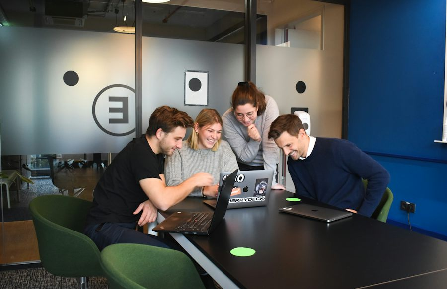

Ficha de sesión · S05 · solo docente
| § | Bloque | Min |
|---|---|---|
| 1 | Warm-up · Nova Studio news | 4 |
| 2 | Vocabulary · Describe It, Don't Say It | 7 |
| 3 | Grammar · source vs. stance | 10 |
| 4 | Listening · Who's Right? | 7 |
| 5 | Speaking · Devil's Advocate Draw (setup 2 · 3 rondas 12 · twist 5 · 12 preguntas 5) | 24 |
| 6 | Wrap-up · Correction Bounty + exit | 8 |
| Total | 60 |
Warm-up · Nova Studio changed the rules
Teacher notes · §1 Warm-up
Pedagógica
- Nova Studio es una empresa ficticia con seis cambios cortos (≤12 palabras). El alumno lee, reacciona (👍 🤔 👎) y justifica en voz alta. No exijas el marco todavía: tú modelas «They said… but I think…» al responderle.
- Repaso activo de Elemental 3 (2 elementos): consejo («you should») y comparación («better than»). Sin gramática nueva en este bloque; 30 s en silencio y luego habla sin leer.
- Grupo: cuenta el pulso del grupo (cuántos 👍/👎 por noticia). 1:1: tú contradices su reacción para provocar «Why?». Máx. 4 min.
Engagement
- Pregunta real: «¿Qué regla de tu trabajo o escuela cambió hace poco?»
- Cierra en voz alta: «Today I can say what they said and what I think.»
Crecimiento
- «In 56 minutes you will argue a rule you did not choose — and still make a plan.»
- Anota las noticias más polémicas: se reciclan en la misión (§5).
Vocabulary · 10 words to take a position

Explain the word — your partner guesses
Guessed 0 / 0 cards1. Draw a card. 2. You have 45 seconds to describe the word. Don't say the word, don't translate it and don't say the banned words. 3. Your partner guesses. Guessed = +1. Play at least 5 cards.
Teacher notes · §2 Vocabulary
Pedagógica
- Describe It, Don't Say It (OCULTAMIENTO): el que describe NO puede decir la palabra, traducirla ni usar las palabras prohibidas; el compañero adivina. 45 s por ronda, punto por acierto: el punto se gana porque el alumno PRODUCE lengua al describir, no por rapidez. En 1:1 tú adivinas y luego inviertes los roles.
- Primero el muro (≈2 min): el alumno toca la tarjeta, oye la palabra y el ejemplo y repite 2 veces. Pronunciación: suggestion /səˈdʒestʃən/, deadline /ˈdedlaɪn/, agree /əˈɡriː/, opinion /əˈpɪnjən/.
- Regla 3-3-3 y cierre: reglas en pantalla (≤3 min). Al final di en voz alta: «We guessed __ of __ cards.» Si alguien se queda sin ideas, la pista modelo aparece al terminar la ronda: úsala como modelo, no como respuesta.
Engagement
- Pregunta: «¿Qué palabra de la lista usarías en tu próximo mensaje de trabajo o de casa?»
- Rotación: ninguna dinámica de VOC se repite en 6 sesiones (VOC-07 es nueva en este bloque).
Crecimiento
- Estas 10 palabras se reutilizan en la misión (§5) y en el listening (§4).
- Anota las palabras que nadie pudo describir: reciclarlas en S6.
Grammar · what they said · what I think
Keep the source and your opinion apart
A · Source
Information from someone else (they · the message · the manager).
B · My stance
What I recommend. I think we should + base verb.
C · One reason
ONE simple reason is enough.
| Part | Pattern |
|---|---|
| Source | They said (that) … · The message says … · The manager told me … |
| Stance | …but I think we should + verb |
| Reason | because + a simple reason |
Model: They said the meeting starts at 8:30, but I think we should start at nine because the bus is late.
¿Qué es? Una forma de separar lo que OTROS dijeron (They said…) de lo que TÚ recomiendas (I think we should…), con una razón (because…).
¿Cómo se usa? Primero la fuente, luego but, luego tu postura y una razón. Después de should va el verbo base: we should keep, nunca should to keep.
¿Para qué hoy? Para que quien te escucha sepa qué es información y qué es tu opinión, y pueda decidir.
Cuidado: «They said me…» no existe: They told me… o They said….
Choose the correct form
Source or stance?
Sorted 0 / 6Read each line. Is it information somebody else gave (SOURCE) or what I think (STANCE)? Then say the model sentence.
Build it: source → stance → reason
Built 0 / 3Teacher notes · §3 Grammar
Pedagógica
- UN solo punto de lengua: They said… but I think we should… because…. Explicación docente ≤5 min (el Recap está en pantalla). Práctica mecánica A (2 min) = ≤1/3 del bloque; B y C son significativas; la etapa comunicativa ocurre en la misión (§5) y en el Correction Bounty (§6).
- GRM-04 Correction Bounty (ELIMINACIÓN): durante la misión anotas, sin nombres, los errores del punto del día. Al cierre el grupo los repara y cada reparación suma. Aquí solo explicas la regla del juego en 1 frase.
- Límite de nivel: sin condicionales («If I were you…»), sin cambios de tiempo en «They said» y sin preguntas reportadas. Todos los datos se pasan en presente o futuro.
- Errores previstos: «They said me…», «should to + verbo», «I think we should… because is…». Márcalos en el bounty.
Engagement
- «Before you give your opinion, say what they said. Then say what YOU think.»
- Cierra en voz alta: «My best sentence today is __.»
Crecimiento
- Este marco se reutiliza en S6–S8 (Block 1) y en la misión final (S32).
- Anota los 3 errores más repetidos: serán el bounty de §6.
Listening · Who's right?

Anil and Ellie read the Nova Studio update. They don't agree. Listen twice, find who said what, and then YOU decide who has the stronger reason.
Final audio: MP3 recorded with ElevenLabs.
Source or opinion — who is it?
Who has the stronger reason? Prove it with TWO quotes
Teacher notes · §4 Listening
Pedagógica
- Who's Right? (RANKING): dos personas discuten y el alumno arbitra. Guion de 151 palabras (rango B1 120–200); Anil habla inglés indio (no nativo) y Ellie inglés canadiense. Marca [PARA GRABAR]: sin MP3 suena la voz del navegador.
- Ciclo: (1) escuchan completo; (2) Task 1 (quién dijo qué: empresa, gerente, Anil, Ellie); (3) segunda escucha para confirmar; (4) Task 2: eligen un ganador y lo defienden con DOS citas del mismo hablante. No hay ganador correcto: se evalúa la evidencia, no el bando.
- Answer key: office three days = la empresa · keep Tuesday and Wednesday only = Ellie · new rule starts in November = la empresa · solve problems faster = Anil · Thursday is remote = la gerente · ask for an exception = Anil.
- Cumple: ≥3 elementos de léxico (opinion/suggestion/agree/plan/reason) y la forma central ≥2 veces («They said…», «I think we should…») sin subrayarla.
Engagement
- «If you were the manager, who would you listen to?» (sin condicional: pregunta abierta, el alumno responde con I think…).
- Cierra en voz alta: «My arbiter verdict: __, because __ and __.»
Crecimiento
- Distinguir fuente de postura al ESCUCHAR es la base de Block 2 (Clarify).
- Anota quién usó «They said… but I think we should…» sin ayuda.
Speaking · Devil's Advocate Draw
You don't choose your side. You draw it.
1 · Source: “They said…” 2 · Stance: “…but I think we should…” 3 · Reason: “because…” 4 · Plan: “So, the plan is…”
Group: pairs (Player A and Player B). Show your secret slip to nobody. Groups of 4: two pairs.
1:1: you are Player A, the teacher is Player B. Same rules.
One fact changes. Reorganize your message.
Twists 0 / 312 questions · always 2 follow-ups

Teacher notes · §5 Speaking
Pedagógica
- Devil's Advocate Draw (ROL OCULTO): cada alumno saca una postura que NO eligió (defender, cambiar, opción intermedia) y debe sostenerla con fuente + postura + razón. Mata el «I agree» automático. En 1:1 tú tomas el rol contrario.
- Ronda (4 min c/u): 30 s de preparación en silencio, luego hablan sin notas; al final deben cerrar con «So, the plan is…». Punto por MOVIMIENTO producido (4 por ronda = 12), no por rapidez. Mientras tanto anotas errores SIN nombres para el Correction Bounty (§6).
- Plot twist (5 min): cambia un dato y deben reorganizar el mensaje con el nuevo plan. Es la evidencia de transferencia del temario (se cambia un dato, plazo o persona).
- Preguntas (5 min): elige 4–5 de las 12; todas con 2 follow-ups; nunca respuesta de una palabra. Setup ≤2 min (reglas en pantalla).
Engagement
- Anuncia el resultado: «We found __ of 12 moves and __ of 3 twists. Mission complete!»
- Pide que revelen su slip al final: ¿quién defendió bien una postura que no era suya?
Crecimiento
- S6 sube la exigencia: la postura se apoya en una comparación.
- Registra: movimientos, twists, errores del bounty y qué postura costó más defender.
Wrap-up · Better the second time
Fix the errors we heard today (anonymous)
Repaired 0✓ Success
↑ Upgrade
✎ Repair
↻ Next use
Write 4 lines about a real rule today: source · stance · reason · plan.
60 seconds · 5 questions
Today I can…

You can say what they said, what you think and why.
Homework: write 4 lines about a REAL rule or plan you disagree with: They said… but I think we should… because… So, the plan is… Next: Session 6.
Teacher notes · §6 Wrap-up
Pedagógica
- Máx. 2 aciertos y 3 correcciones de alto valor (el bounty de arriba). Los errores se anotan sin nombres y se reparan en grupo: punto por reparación correcta.
- Tarea: 4 líneas sobre una regla real. Se revisa al inicio de S6.
Engagement
- Declaración final: «Today I can say what they said, what I think and why.»
- Compara con §1: «Minute 1: you reacted with 👍 🤔 👎. Minute 58: you defend a position with a reason.»
Crecimiento
- Registra: movimientos, twists, bounty reparado, veredicto del arbitraje.
- «Next session: your stance gets stronger with a comparison.»